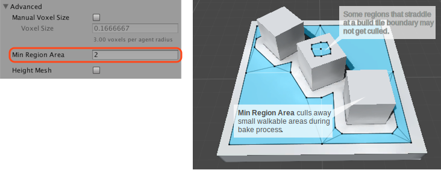

Advanced NavMesh Bake Settings
Min Region Area

The Min Region Area advanced build settings allows you to cull away small non-connected NavMesh regions. NavMesh regions whose surface area is smaller than the specified value, will be removed.
Please note that some areas may not get removed despite the Min Region Area setting. The NavMesh is built in parallel as a grid of tiles. If an area straddles a tile boundary, the area is not removed. The reason for this is that the area pruning happens at a stage in the build process where surrounding tiles are not accessible.
Voxel Size
Manual voxel size allows you to change the accuracy at which the bake process operates.
The NavMesh bake process uses voxelization to build the NavMesh from arbitrary level geometry. In the first pass of the algorithm, the scene is rasterized into voxels, then the walkable surfaces are extracted, and finally the walkable surfaces are turned into a navigation mesh. The voxel size describes how accurately the resulting NavMesh represents the scene geometry.
The default accuracy is set so that there are 3 voxels per agent radius, that is, the whole agent width is 6 voxels. This is a good trade off between accuracy and bake speed. Halving the voxel size will increase the memory usage by 4x and it will take 4x longer to build the scene.

Generally you should not need to adjust the voxel size, there are two scenarios where this might be necessary: building a smaller agent radius, or more accurate NavMesh.
Smaller Agent Radius
When you bake for an artificially smaller agent radius, the NavMesh bake system will also reduce the voxel size. If your other agent dimensions stays the same, it may not be necessary to increase the NavMesh build resolution.
The easiest way to do that is as follows:
- Set the Agent Radius to the real agent radius.
- Turn on the Manual Voxel Size, this will take the current voxel size and "freeze it".
- Set the artificially smaller Agent Radius, since you have checked on the Manual Voxel Size the voxel size will not change.
More Accurate NavMesh
If your level has a lot of tight spots, you may want to increase the accuracy by making the voxel smaller. The label under the Voxel Size shows the relation between the voxel size and Agent Radius. A good range is something between 2-8, going further than that generally results really long build times.
When you intentionally build tight corridors in your game, please note that you should leave at least 4 * voxelSize clearance in addition to the agent radius, especially if the corridors are at angles.
If you need smaller corridors than the NavMesh baking can support, please consider using Off-Mesh Links. These have the additional benefit that you can detect when they are being used and can, for example, play a specific animation.
Further reading
- Building a NavMesh – workflow for NavMesh baking.
- Building Off-Mesh Links Automatically - further details on automatic Off-Mesh Link generation.
- Building Height Mesh for Accurate Charater Placement – workflow for Height Mesh baking.